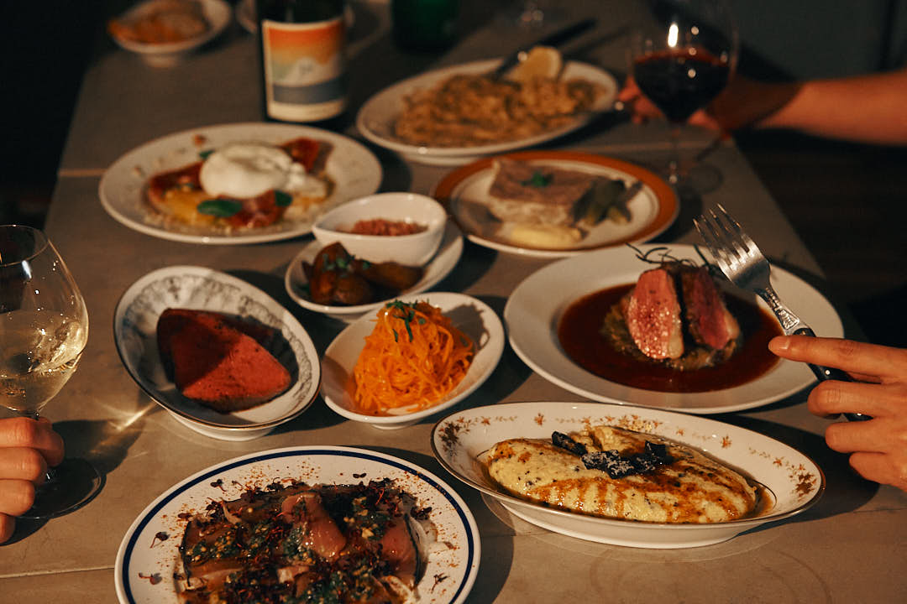
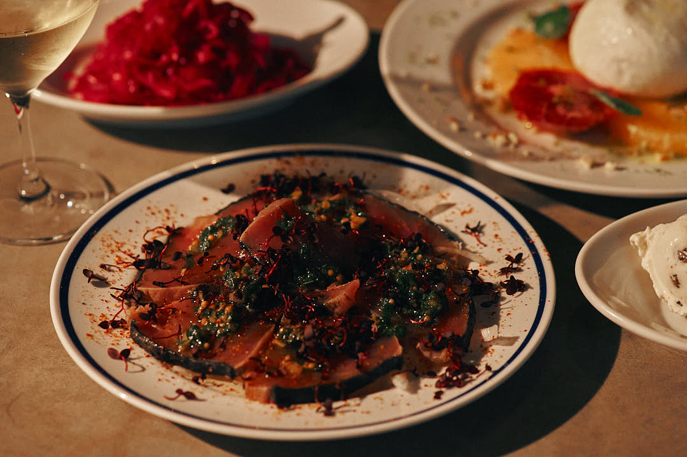
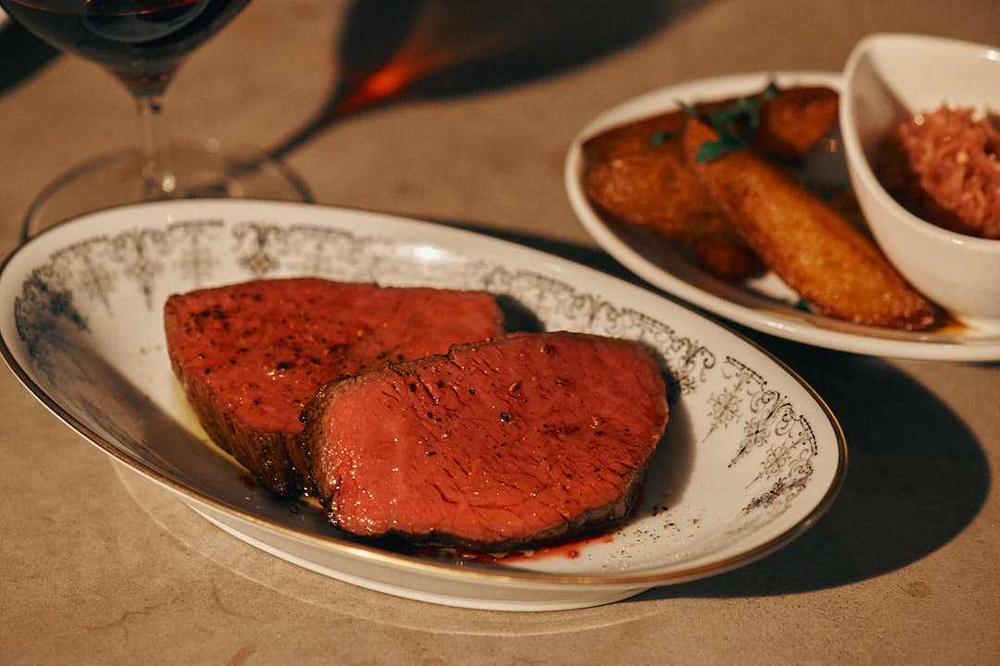
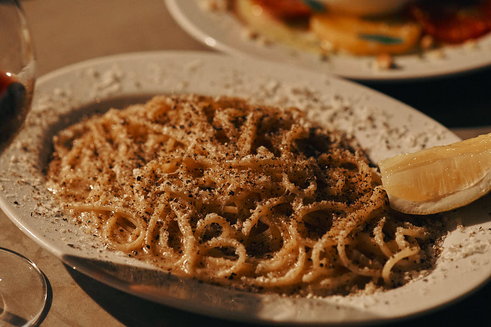

コース
- おまかせコース 5,500円（税込）
前菜6皿＋パスタ＋メイン＋デザートの構成です。
- おまかせコース 6,600円（税込）
前菜7皿＋パスタ＋メイン＋デザートの構成です。
- おまかせコース 7,700円（税込）
前菜7皿＋パスタ＋肉魚のWメイン＋デザートの構成です。
ディナーメニュー

- ◆APPETIZER
- 前菜3種盛り合わせ - 1,650円
- 赤キャベツとクミンのピクルス - 580円
- ニンジンとオレンジのラペ - 580円
- パテ・ド・カンパーニュ - 980円
- 越後もち豚のリエット - 880円
- マスカルポーネとラムレーズン - 780円
- COLD DISHES
- 鮮魚のカルパッチョ - 1,700円
- タコとアボカドのわさびマリネ - 1,350円
- 国産牛ハツのカルパッチョ - 1,600円
- ブラータチーズと季節のフルーツ - 2,400円
- 生牡蠣の2種盛り - 1,000円
- ツブ貝とフルーツトマトのサラダ仕立て - 1,500円
- HOT DISHES
- グリーンアスパラの香草フリット - 1,450円
- トリュフオムレツ - 1,950円
- ホタテのグリル ブールブランソース - 1,650円
- 銘柄和牛とじゃがいものパン粉焼き - 1,500円
- 本日の魚料理 - 2,200円
- バケット - 200円

- MAIN
- 銘柄和牛ランプのステーキ - 3,800円
- 鴨肉と蓮根のステーキ - 3,400円
- NZ産ラムラックのロースト - 3,800円

- ビストロの〆
- 国産レモンとカチョ・エ・ぺぺ - 1,550円
- 激辛アラビアータ - 1,350円
- DESSERT
- 季節のアイス2種盛り - 580円
- アールグレイのクレームブリュレ - 880円
- ココナッツのブランマンジェ - 680円